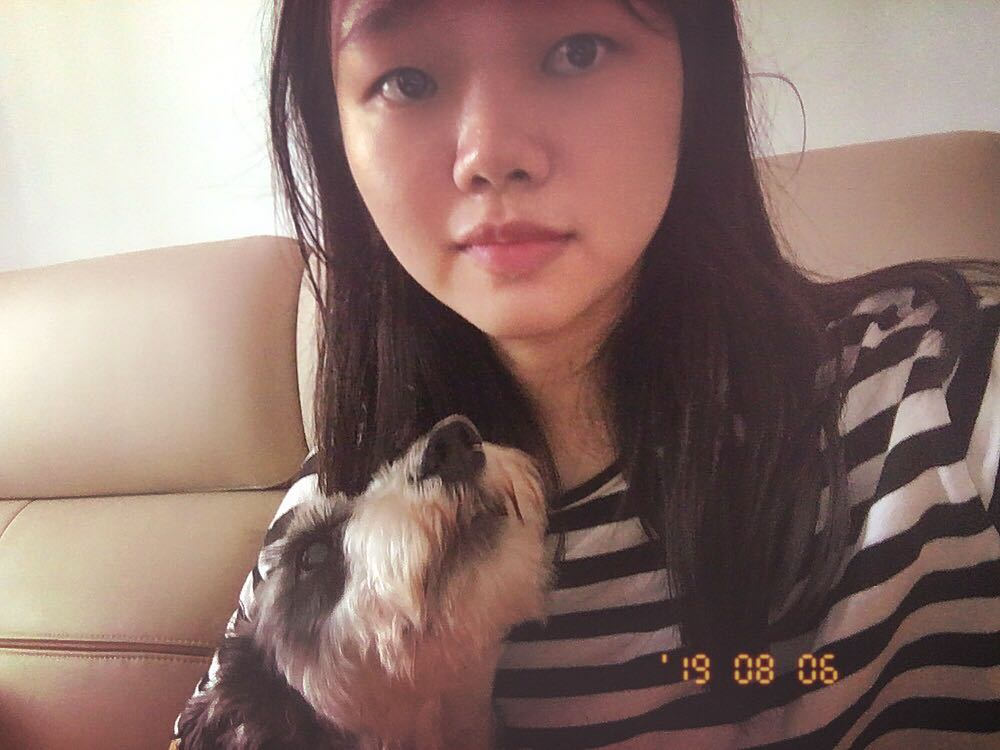

About Me
I am a first-year student in the interactive media design program. I have taught myself HTML, CSS before this course, and found programming is quite attractive. So I decided to change my line of work from engineering to internet industry. I hope I can get a job as a UX designer after completing this program.
My birthday is on April 1st, which is April Fool's Day . Each year, I am always tricked by my friends, but it somehow promotes our friendship. Besides, I am a passionate and curious person with a wide range of hobbies. Music is always what interests me most. I play the violin and the guitar. Meanwhile, I’m learning to arrange music.
Hobby List:
- Music mixing & arrangement
- Baking
“If people are doubting how far you can go, go so far that you can’t hear them anymore.” – Michele Ruiz